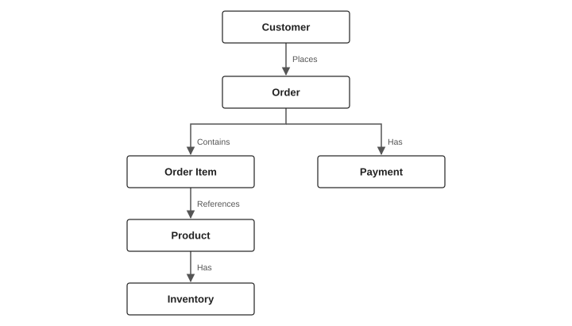
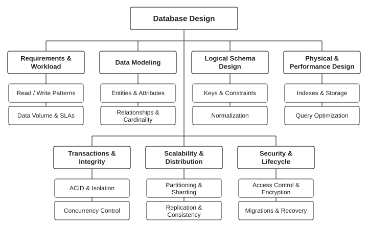
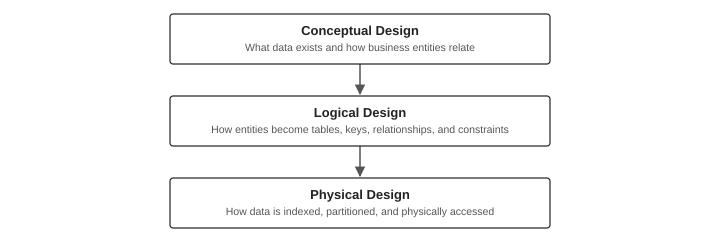
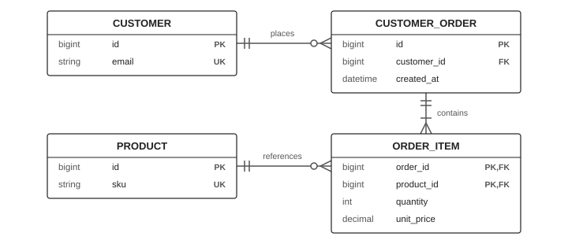
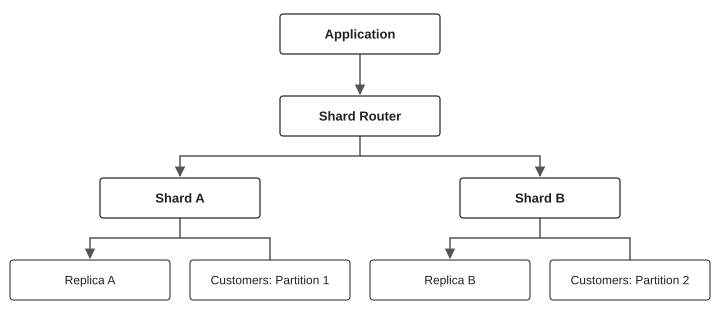

Database Design is a fundamental part of software engineering and system design. It focuses on how data should be structured, organized, stored, related, accessed, and maintained so that applications can operate correctly, efficiently, and reliably.
A well-designed database helps ensure:
Database design is not simply about creating tables and columns. It involves decisions about data modeling, relationships, constraints, normalization, indexing, storage structures, transactions, and scalability.
Database Design is the process of defining the structure and organization of data in a database, including the relationships, rules, constraints, and access mechanisms needed to satisfy application requirements.
For example, consider an e-commerce application that manages:
Instead of storing everything in one large table, database design determines how these entities should be represented, how they relate to each other, and how data integrity should be enforced.
For example:

Important design questions include:
Database design provides the foundation for answering these questions.
Database design is a broad discipline containing several interrelated concepts. These can be organized into major categories.

Conceptual overview: these categories overlap. For example, choosing a primary key affects logical modeling, indexing, and distributed scalability.
| Goal | Explanation |
|---|---|
| Data Integrity | Prevent invalid, inconsistent, or duplicate data |
| Data Consistency | Ensure the database respects defined business rules and consistency guarantees |
| Data Efficiency | Reduce unnecessary duplication and excessive storage |
| Query Performance | Optimize retrieval, filtering, joins, and aggregation |
| Write Performance | Support efficient inserts, updates, and deletes |
| Scalability | Accommodate increases in data size and user traffic |
| Concurrency Control | Coordinate simultaneous transactions without violating correctness |
| Availability | Keep data accessible according to application requirements |
| Reliability | Protect against crashes, failures, and data loss |
| Security | Protect sensitive data from unauthorized access |
| Maintainability | Make the data model understandable and adaptable |
| Extensibility | Allow new features and schema changes without unnecessary disruption |
Key point: Database design is about balancing correctness, performance, scalability, and maintainability. Optimizing one dimension may introduce costs in another.
Database design is commonly divided into three major levels.

| Level | Focus | Example |
|---|---|---|
| Conceptual Database Design | High-level business entities and relationships | Customer places Order |
| Logical Database Design | Tables, columns, keys, constraints, normalization | orders.customer_id references customers.id |
| Physical Database Design | Indexes, partitions, storage, access paths | B-tree index on orders(customer_id, created_at) |
4.1 Conceptual Database Design
Defines the business entities and their relationships without focusing on database-specific implementations.
Typical concepts include entities, attributes, relationships, cardinality, and ER diagrams.
4.2 Logical Database Design
Transforms the conceptual model into a formal data structure.
Typical concepts include tables, columns, primary keys, foreign keys, data types, constraints, and normalization.
4.3 Physical Database Design
Determines how the logical schema is implemented efficiently in a specific database management system.
Typical concepts include indexes, storage pages, data organization, partitioning, compression, and access paths.
Important: Conceptual and logical designs are primarily concerned with correctness and structure. Physical design is primarily concerned with implementation and efficiency, although all three influence one another.
5.1 Data Modeling Concepts
Data modeling defines how real-world information is represented inside a database.
| Concept | Meaning |
|---|---|
| Data Model | A formal way of describing how data is structured, related, and constrained |
| Entity | A real-world object or concept, such as Customer, Product, or Order |
| Attribute | A property of an entity, such as customer name or email |
| Entity Relationship Diagram (ERD) | Visual representation of entities and their relationships |
| Relationship | Association between entities |
| Cardinality | Number of records that can participate in a relationship |
| Optionality | Whether participation in a relationship is mandatory or optional |
| Domain | Set of permitted values for an attribute |
| Business Rule | A requirement that determines how data must behave |
| Data Dictionary | Documentation of database objects, fields, definitions, and constraints |
5.2 Types of Relationships
| Relationship | Meaning | Example |
|---|---|---|
| One-to-One (1:1) | One record relates to at most one record in another entity | User ↔ UserProfile |
| One-to-Many (1:N) | One record relates to multiple records | Customer → Orders |
| Many-to-One (N:1) | Multiple records reference one record | Orders → Customer |
| Many-to-Many (M:N) | Records on both sides can relate to multiple records | Students ↔ Courses |
| Self-Referencing | Records within the same table reference other records in that table | Employee → Manager |
In relational databases, many-to-many relationships are normally implemented using a junction table.
For example:

Here, ORDER_ITEM is the junction table between orders and products. It also stores properties of the relationship, such as quantity and price.
5.3 Relational Database Concepts
These concepts form the foundation of relational database design.
| Concept | Meaning |
|---|---|
| Relation / Table | Logical collection of records with a defined structure |
| Tuple / Row | One record within a relation |
| Attribute / Column | A named field with a defined data type |
| Schema | Formal definition of database objects and their structure |
| Primary Key | Column or combination of columns uniquely identifying a row |
| Foreign Key | Column or columns referencing a candidate key in another or the same table |
| Candidate Key | Minimal set of attributes that uniquely identifies a record |
| Alternate Key | Candidate key not selected as the primary key |
| Composite Key | Key formed using multiple columns |
| Natural Key | Key derived from real business data, such as a stable product code |
| Surrogate Key | Artificial identifier, such as a generated numeric ID or UUID |
| Unique Constraint | Ensures specified values or combinations are unique, subject to database-specific NULL semantics |
| Referential Integrity | Ensures referenced relationships remain valid |
Important distinction: A primary key identifies a record, while a foreign key establishes a relationship between records.
5.4 Data Integrity and Constraints
Database constraints protect data integrity independently of application code.
| Constraint | Purpose | Example |
|---|---|---|
PRIMARY KEY | Uniquely identifies records | customer_id |
FOREIGN KEY | Maintains valid relationships | orders.customer_id |
UNIQUE | Prevents duplicate values or combinations | Customer email |
NOT NULL | Requires a value | Order creation timestamp |
CHECK | Validates a condition | quantity > 0 |
DEFAULT | Supplies a value when omitted | status = 'PENDING' |
| Data Type | Restricts the kind of stored value | DECIMAL(12,2) |
| Referential Action | Defines behavior when referenced rows change | ON DELETE RESTRICT |
| Exclusion Constraint | Prevents overlapping/conflicting values in databases that support it | Overlapping bookings |
For example, an inventory quantity should never become negative.
A database can enforce this using:
quantity INT NOT NULL CHECK (quantity >= 0)However, constraints alone do not solve every concurrency problem. Transactional update logic is also required.
Normalization is the process of organizing relational data to minimize unnecessary duplication and reduce data modification anomalies.
It primarily focuses on logical database design.
6.1 Normal Forms
| Normal Form | Purpose |
|---|---|
| First Normal Form (1NF) | Ensures attributes contain values from their defined domains and rows are representable as proper relational tuples; repeating groups are eliminated |
| Second Normal Form (2NF) | Removes partial dependencies of non-prime attributes on candidate keys |
| Third Normal Form (3NF) | Removes problematic transitive dependencies involving non-prime attributes |
| Boyce-Codd Normal Form (BCNF) | Requires every determinant of a nontrivial functional dependency to be a superkey |
| Fourth Normal Form (4NF) | Addresses nontrivial multivalued dependencies |
| Fifth Normal Form (5NF) | Addresses certain join dependencies |
In many transactional applications, 3NF is a practical starting point, with BCNF considered when applicable.
6.2 Example of Normalization
Suppose an order table stores:
| order_id | customer_id | customer_name | product_name |
|---|---|---|---|
| 101 | 1 | Rahul | Laptop |
| 102 | 1 | Rahul | Mouse |
| 103 | 2 | Amit | Keyboard |
Customer information is duplicated across orders.
A normalized design might separate the data into:
CUSTOMERS
| id | name |
|---|---|
| 1 | Rahul |
| 2 | Amit |
ORDERS
| id | customer_id |
|---|---|
| 101 | 1 |
| 102 | 1 |
| 103 | 2 |
Product information would be modeled separately using Product and OrderItem tables.
This separates customer data from order data, reduces duplication, and ensures customer information has a single authoritative location.
6.3 Normalization vs Denormalization
Denormalization intentionally introduces redundancy or derived data to improve access performance for specific workloads.
| Aspect | Normalization | Denormalization |
|---|---|---|
| Primary goal | Data integrity and reduced redundancy | Faster reads or simpler queries |
| Redundancy | Generally reduced | Intentionally introduced |
| Updates | Fewer duplicated values to maintain | Multiple copies may need synchronization |
| Joins | Often more joins | Often fewer joins |
| Storage | Often lower | Often higher |
| Common use | Transactional systems | Reporting, analytics, read-heavy applications |
Key point: Normalization and denormalization are not opposing rules where one is always better. A database can have a normalized core model and selectively denormalized read models.
For example, storing the product's sale price in order_items.unit_price is important for preserving order history, even when a Product table stores the current price.
Different database systems organize and access data in different ways.
| Database Type | Data Model | Common Use Cases |
|---|---|---|
| Relational (RDBMS) | Tables with relationships | Banking, payments, orders, inventory |
| Document Database | JSON-like documents | Product catalogs, flexible content |
| Key-Value Database | Key-value pairs | Caching, session data |
| Wide-Column Database | Partitioned rows with flexible columns | Large-scale event and time-series workloads |
| Graph Database | Nodes and edges | Social networks, recommendations, fraud analysis |
| Time-Series Database | Time-indexed records | Metrics, monitoring, IoT |
| Columnar / Analytical Database | Column-oriented data storage | Reporting, OLAP, analytics |
| Vector Database | Embedding vectors and metadata | Semantic search, similarity search, RAG |
Examples include:
| Database | Common Classification |
|---|---|
| PostgreSQL | Relational |
| MySQL | Relational |
| Microsoft SQL Server | Relational |
| MongoDB | Document |
| Redis | Key-value / multimodel |
| Cassandra | Wide-column |
| Neo4j | Graph |
| ClickHouse | Column-oriented analytical |
| InfluxDB | Time-series |
These categories are not mutually exclusive. For example, PostgreSQL also supports JSON documents, and Redis supports multiple data structures.
Relational vs NoSQL Database Design
| Aspect | Relational | NoSQL |
|---|---|---|
| Data organization | Primarily tables | Documents, keys, graphs, wide columns, etc. |
| Schema | Explicit relational schema | Model-specific; may be flexible or strictly validated |
| Relationships | Foreign keys and joins | References, embedding, or model-specific relationships |
| Transactions | Strong transactional support is common | Varies by database; some support full ACID transactions |
| Scaling | Vertical and horizontal approaches | Often designed with horizontal distribution in mind |
| Typical strengths | Complex relationships, constraints, transactions | Workload-specific models and distributed access patterns |
Database selection should depend on access patterns, data relationships, consistency requirements, operational complexity, and workload characteristics—not simply whether data is structured or unstructured.
Physical database design determines how database data is organized and accessed efficiently.
8.1 Core Physical Design Concepts
| Concept | Meaning |
|---|---|
| Storage Engine | Component responsible for storing, retrieving, and managing data |
| Page / Block | Unit in which many database engines organize data on disk |
| Heap Table | Table whose row storage is not ordered by a clustered key |
| Clustered Organization | Storage organization based on an index or key, depending on the DBMS |
| Index | Auxiliary structure that helps locate rows efficiently |
| B-tree / B+ tree | Tree-based structure commonly used for indexes |
| Hash Index | Index based on hashing, typically useful for equality lookups |
| Bitmap Index | Compact representation useful for certain analytical workloads |
| Composite Index | Index containing multiple columns |
| Covering Index | Index containing the data needed to satisfy a query without fetching additional table columns |
| Partial / Filtered Index | Index covering rows that satisfy a condition |
| Expression Index | Index built from a computed expression |
| Partitioning | Dividing a large table or dataset into manageable subsets |
| Compression | Reducing physical storage requirements |
| Materialized View | Stored result of a query, refreshed according to defined rules |
8.2 Indexing
An index can reduce the amount of data that must be inspected for a query.
For example:
CREATE INDEX idx_orders_customer
ON orders(customer_id);A query such as:
SELECT *
FROM orders
WHERE customer_id = 101;may benefit from this index.
However, indexes introduce trade-offs.
| Advantage | Disadvantage |
|---|---|
| Faster selective queries | Additional storage |
| Faster indexed joins | Extra work during writes |
| Efficient filtering and ordering | Index maintenance overhead |
| May reduce full-table scanning | Poor index selection can waste resources |
Important: Creating an index does not guarantee that the database will use it. The query optimizer selects a plan based on estimated costs, statistics, and available access paths.
8.3 Advanced Indexing Concepts
| Concept | Explanation |
|---|---|
| Index Selectivity | How effectively an indexed condition narrows down matching rows |
| Cardinality | Number of distinct values in a column or result set, depending on context |
| Leftmost-Prefix Principle | Column-order behavior important for many composite B-tree indexes |
| Index-Only Scan | Accessing required information using an index without ordinary table-row retrieval |
| Index Maintenance | Updating index structures after underlying data changes |
| Index Fragmentation | Physical or logical fragmentation affecting some index designs |
| Query Statistics | Information used by query optimizers to estimate costs |
| Sargability | Whether a predicate can efficiently use available indexes or access paths |
Database design must consider how applications access data.
Two schemas representing the same business entities can perform very differently for a particular workload.
Core Query Performance Concepts
| Concept | Meaning |
|---|---|
| Query Execution Plan | Strategy selected by the database to execute a query |
| Query Optimizer | Component that evaluates possible execution strategies |
| Full Table Scan | Reading the table to identify matching rows |
| Index Scan / Seek | Using an index to locate or scan relevant entries |
| Nested Loop Join | Join approach that repeatedly searches for matches |
| Hash Join | Join approach that uses a hash structure |
| Merge Join | Join approach that matches ordered inputs |
| Predicate Pushdown | Applying filtering as early as practical |
| Projection | Selecting required columns |
| Join Ordering | Choosing the order in which tables are joined |
| Pagination | Retrieving a subset of a result set |
| Keyset Pagination | Paging using an ordered cursor or last-seen key |
| Aggregation | Computing summaries such as counts and totals |
| Query Profiling | Examining execution costs, timing, and resource usage |
For example, if an application frequently retrieves recent orders for a customer:
SELECT id, status, created_at
FROM orders
WHERE customer_id = 101
ORDER BY created_at DESC
LIMIT 20;A composite index can be appropriate:
CREATE INDEX idx_orders_customer_created
ON orders(customer_id, created_at DESC);This is an example of workload-driven database design: index choices are based on actual query patterns rather than indexing every column.
Database design must account for concurrent operations and the correctness guarantees they require.
For example, two users might attempt to purchase the last available item at the same time.
Without proper transactional handling, the application could oversell inventory.
10.1 ACID Properties
ACID describes four important properties of database transactions.
| Property | Meaning | Example |
|---|---|---|
| Atomicity | A transaction's changes are applied together or rolled back as a unit | Payment and order updates succeed together |
| Consistency | A transaction preserves defined database invariants | Foreign keys and balance rules remain valid |
| Isolation | Concurrent transactions are controlled according to an isolation model | Concurrent purchases do not corrupt inventory |
| Durability | Committed changes survive failures according to the database's durability guarantees | Committed orders remain after a crash |
10.2 Transaction Isolation Levels
| Isolation Level | General Meaning |
|---|---|
| Read Uncommitted | May allow reading another transaction's uncommitted changes |
| Read Committed | Prevents dirty reads; repeated reads may observe committed changes |
| Repeatable Read | Provides stronger guarantees for repeated reads |
| Serializable | Ensures the result is equivalent to some serial execution of transactions |
Actual behavior depends on the DBMS and its concurrency implementation.
For example, PostgreSQL uses MVCC-based isolation, while SQL Server supports several locking- and versioning-based isolation options.
10.3 Common Concurrency Problems in Databases
| Problem | Explanation | Example |
|---|---|---|
| Dirty Read | A transaction reads uncommitted changes from another transaction | Reading a payment before it is committed |
| Non-Repeatable Read | Repeated reads of the same record return different committed values | Account balance changes between reads |
| Phantom Read | Repeating a predicate query returns a different matching set | Additional orders appear between queries |
| Lost Update | One transaction's update overwrites another's | Two purchases update the same stock quantity |
| Write Skew | Concurrent transactions make individually valid decisions that violate a combined invariant | Two doctors each go off duty |
| Deadlock | Transactions wait for locks held by each other | Opposite record-lock acquisition order |
| Lock Contention | Transactions compete for the same locked records | Many updates to one inventory row |
10.4 Concurrency Control Mechanisms
| Mechanism | Purpose |
|---|---|
| Pessimistic Locking | Lock records before performing protected operations |
| Optimistic Locking | Detect conflicting changes using version values or conditions |
| MVCC (Multi-Version Concurrency Control) | Maintain row versions to support transactionally consistent access |
| Row-Level Locking | Coordinate access to individual rows |
| Table-Level Locking | Coordinate access to a whole table |
| Predicate / Range Locking | Protect qualifying ranges or predicates where supported |
| Deadlock Detection | Identify transactions involved in circular waits |
| Serialization Retry | Retry transactions aborted because a serializable execution cannot be maintained |
Important: Java's synchronized keyword cannot protect a database record across several Spring Boot application instances. Coordination must use mechanisms shared by those instances, such as database transactions, constraints, and locking.
Scalability becomes important when databases must support larger amounts of data, more users, and greater read/write throughput.
11.1 Scalability Concepts
| Concept | Meaning |
|---|---|
| Vertical Scaling | Increasing CPU, RAM, or storage on a database server |
| Horizontal Scaling | Distributing workloads across additional nodes |
| Partitioning | Dividing data into subsets, often within one logical database |
| Sharding | Distributing subsets of data across separate database nodes or clusters |
| Replication | Maintaining copies of data across database instances |
| Read Replica | Replica used to serve some read workloads |
| Primary-Replica Architecture | Primary handles authoritative writes; replicas follow changes |
| Multi-Primary Replication | Multiple nodes accept writes under a defined conflict and replication model |
| Distributed Database | Database whose data or operations span multiple machines |
| Data Locality | Keeping frequently accessed related data close together |
| Hot Partition / Hot Key | A partition or key receiving disproportionate traffic |
| Rebalancing | Redistributing data or workloads among partitions/nodes |
11.2 Partitioning vs Sharding vs Replication
| Concept | Main Purpose | Example |
|---|---|---|
| Partitioning | Manage large datasets and improve data access/maintenance | Divide orders by month |
| Sharding | Distribute data and workload across machines | Customers 1–1M on shard A, others on shard B |
| Replication | Maintain multiple copies for availability or read capacity | Primary database with two read replicas |

The diagram shows a conceptual combination of sharding and replication. A real deployment may use different replication and routing topologies.
11.3 Distributed Database Concepts
| Concept | Explanation |
|---|---|
| Strong Consistency | Reads and writes satisfy a specified strong consistency model |
| Eventual Consistency | Replicas converge when updates cease and propagation completes |
| Quorum | Required participation threshold for certain operations |
| Leader Election | Selecting a node to coordinate a replicated group |
| Consensus | Agreement among distributed nodes under specified failure assumptions |
| CAP Theorem | Describes the consistency/availability trade-off during network partitions |
| Network Partition | Communication failure separating parts of a distributed system |
| Distributed Transaction | Transaction involving multiple database participants |
| Two-Phase Commit (2PC) | Protocol for coordinating commit across participants |
| Change Data Capture (CDC) | Capturing database changes for downstream processing |
| Replication Lag | Delay before a replica reflects changes from its source |
| Split-Brain | Situation in which multiple nodes incorrectly act as authoritative leaders |
The main distributed design concern is selecting appropriate consistency, availability, latency, and operational trade-offs.
Database design differs considerably between transactional and analytical workloads.
| Aspect | OLTP | OLAP |
|---|---|---|
| Full Form | Online Transaction Processing | Online Analytical Processing |
| Primary Goal | Process operational transactions | Analyze large datasets |
| Workload | Many short reads/writes | Complex analytical queries |
| Data Model | Often normalized relational schemas | Often dimensional or analytical models |
| Common Operations | INSERT, UPDATE, DELETE, selective SELECT | Aggregations, scans, grouping |
| Query Patterns | Small targeted record sets | Large data ranges |
| Optimization | Transaction latency and concurrency | Scan efficiency and aggregation throughput |
| Example | Order processing, payment systems | Sales dashboards, trend analysis |
OLAP Data Modeling Concepts
| Concept | Meaning |
|---|---|
| Fact Table | Stores measurable events or business facts |
| Dimension Table | Stores descriptive context such as customer, date, or product |
| Star Schema | Fact table connected to dimension tables |
| Snowflake Schema | Dimension tables further normalized into related tables |
| Slowly Changing Dimension (SCD) | Strategy for tracking changes to dimensional attributes |
| Data Warehouse | Centralized analytical data platform |
| Data Mart | Subject-specific subset of analytical data |
| ETL / ELT | Processes for extracting, transforming, and loading data |
For example, an order-processing database might store normalized customer and order tables, while a reporting system stores a sales fact table connected to product, customer, and date dimensions.
A database design is incomplete without considering how data is protected, recovered, and evolved.
13.1 Security Concepts
| Concept | Purpose |
|---|---|
| Authentication | Verify identities accessing the database |
| Authorization | Control permitted database operations |
| Role-Based Access Control (RBAC) | Assign privileges through roles |
| Least Privilege | Grant only necessary permissions |
| Encryption at Rest | Protect stored data |
| Encryption in Transit | Protect data moving between systems |
| Data Masking | Hide sensitive values |
| Row-Level Security | Restrict accessible rows according to policies |
| Auditing | Track relevant data access and modifications |
| Data Classification | Identify sensitive, confidential, or public data |
13.2 Reliability and Recovery Concepts
| Concept | Purpose |
|---|---|
| Backup | Preserve recoverable copies of data |
| Restore | Recover data from backups |
| Point-in-Time Recovery | Restore to a particular recoverable point |
| Write-Ahead Logging (WAL) | Record changes to support crash recovery and other database functions |
| Checkpoint | Coordinate durable data state and recovery progress |
| High Availability | Reduce downtime through resilient system design |
| Failover | Transfer service to another instance after failure |
| Disaster Recovery | Restore service following major disruption |
| RPO | Maximum acceptable amount of data loss, measured in time |
| RTO | Maximum acceptable recovery duration |
13.3 Schema Evolution and Lifecycle
| Concept | Meaning |
|---|---|
| Schema Migration | Controlled modification of database structure |
| Backward Compatibility | Ensuring existing application versions can continue working |
| Expand-and-Contract | Gradually introducing a schema change before removing obsolete structures |
| Data Backfill | Populating existing records with new or transformed data |
| Data Archiving | Moving infrequently accessed historical data to another storage tier |
| Data Retention | Defining how long information must be kept |
| Soft Delete | Marking a record as deleted without immediately removing it |
| Hard Delete | Physically removing a record |
| Temporal Data Modeling | Representing historical or time-dependent information |
| Data Lineage | Tracking data origins and transformations |
| Data Governance | Managing data ownership, policies, quality, and compliance |
Poor database design can introduce correctness, maintainability, and performance problems.
| Problem | Cause | Preferred Mitigation |
|---|---|---|
| Duplicate Data | Repeated storage of the same facts | Normalization and uniqueness constraints |
| Update Anomaly | One fact stored in multiple places | Normalize or coordinate derived copies |
| Insert Anomaly | Data model requires unrelated data to be inserted | Improve entity decomposition |
| Delete Anomaly | Deleting one fact unintentionally removes another | Improve table separation |
| Orphan Records | Invalid or missing relationships | Foreign keys and appropriate delete policies |
| Missing Business Constraints | Rules enforced only in application code | Use DB constraints where practical |
| Slow Queries | Poor access paths or inefficient schema | Indexes, execution-plan analysis |
| Excessive Indexing | Too many unnecessary indexes | Workload-driven index selection |
| N+1 Queries | Repeated dependent database queries | Appropriate joins, batching, and fetching |
| Hotspot Contention | Many writes target the same records | Redesign contention points or distribute work |
| Overselling Inventory | Unsafe concurrent updates | Atomic updates and transaction control |
| Deadlocks | Conflicting lock acquisition order | Consistent ordering, short transactions, retries |
| Large Table Scans | Missing/selectively ineffective indexes | Query optimization and partition pruning |
| Inefficient Pagination | Large offsets on growing datasets | Consider keyset pagination |
| Data Inconsistency | Uncoordinated replicated or denormalized data | Explicit consistency and reconciliation rules |
| Migration Failure | Breaking schema changes | Versioned, compatible migrations |
| Data Loss | Insufficient recovery strategy | Verified backups, recovery tests |
| Uncontrolled Growth | Missing data lifecycle policy | Retention, partitioning, archival |
Consider an e-commerce system built using Java, Spring Boot, and PostgreSQL.
The application needs to store customers, products, orders, and order items.
15.1 Basic Schema
CREATE TABLE customers (
id BIGINT GENERATED ALWAYS AS IDENTITY PRIMARY KEY,
email VARCHAR(255) NOT NULL UNIQUE,
name VARCHAR(150) NOT NULL
);
CREATE TABLE products (
id BIGINT GENERATED ALWAYS AS IDENTITY PRIMARY KEY,
sku VARCHAR(50) NOT NULL UNIQUE,
name VARCHAR(200) NOT NULL,
price DECIMAL(12,2) NOT NULL CHECK (price >= 0),
stock_quantity INT NOT NULL
CHECK (stock_quantity >= 0)
);
CREATE TABLE orders (
id BIGINT GENERATED ALWAYS AS IDENTITY PRIMARY KEY,
customer_id BIGINT NOT NULL,
status VARCHAR(30) NOT NULL,
created_at TIMESTAMP NOT NULL DEFAULT CURRENT_TIMESTAMP,
CONSTRAINT fk_orders_customer
FOREIGN KEY (customer_id)
REFERENCES customers(id)
);
CREATE TABLE order_items (
order_id BIGINT NOT NULL,
product_id BIGINT NOT NULL,
quantity INT NOT NULL CHECK (quantity > 0),
unit_price DECIMAL(12,2) NOT NULL CHECK (unit_price >= 0),
PRIMARY KEY (order_id, product_id),
FOREIGN KEY (order_id) REFERENCES orders(id),
FOREIGN KEY (product_id) REFERENCES products(id)
);15.2 Physical Optimization
If customers frequently retrieve their recent orders:
CREATE INDEX idx_orders_customer_created
ON orders(customer_id, created_at DESC);15.3 Concurrency-Safe Inventory Update
When purchasing a product, simply reading the stock and subsequently updating it can produce a lost-update race.
A safer approach is a conditional atomic update:
UPDATE products
SET stock_quantity = stock_quantity - 1
WHERE id = 1001
AND stock_quantity >= 1;If exactly one row was updated, the stock deduction succeeded. If zero rows were updated, the product either does not exist or has insufficient stock.
The application must check the affected-row count and run the deduction inside a transaction that coordinates all required order changes.
15.4 Concepts Applied
| Design Decision | Database Concept |
|---|---|
| Separate Customer and Order tables | Normalization |
| Customer-to-Order reference | One-to-Many Relationship |
customers.id | Primary Key |
orders.customer_id | Foreign Key |
| Unique customer email | Unique Constraint |
| Nonnegative stock | Check Constraint |
| Index on customer and creation time | Composite Index |
| Conditional inventory deduction | Atomic Update / Concurrency Control |
| Order and inventory changes in one transaction | Transaction Design |
Historical unit_price in OrderItem | Historical Data Modeling |
This demonstrates how several database design concepts work together in a real application.
Database design often involves choosing between alternatives that optimize different properties.
| Trade-off | Key Consideration |
|---|---|
| Normalization vs Denormalization | Data integrity vs read optimization |
| Natural Key vs Surrogate Key | Business meaning vs identifier stability |
| SQL vs NoSQL | Relational semantics vs workload-specific data models |
| Relational References vs Document Embedding | Independent updates vs colocated reads |
| Indexing vs Write Performance | Faster lookups vs index maintenance |
| Vertical vs Horizontal Scaling | Simplicity vs distributed scaling |
| Partitioning vs Sharding | Local data organization vs cross-node distribution |
| Strong vs Eventual Consistency | Immediate consistency guarantees vs distributed availability/latency trade-offs |
| Optimistic vs Pessimistic Locking | Conflict detection vs up-front coordination |
| Soft Delete vs Hard Delete | Recoverability and history vs storage and erasure requirements |
| UUID vs Sequential IDs | Distributed identifier generation vs locality and index behavior |
| Schema Flexibility vs Strict Validation | Adaptability vs centralized integrity enforcement |
Important: There is no universally optimal database schema. A design that performs well for one workload may be inefficient or unnecessarily complicated for another.
A practical database design process can follow this sequence:
Database design is iterative. A system may revisit its logical and physical design multiple times as workload requirements evolve.
In Java and Spring Boot applications, database design decisions influence entity modeling, repository queries, transaction boundaries, and application performance.
| Database Concept | Java / Spring Boot Implementation |
|---|---|
| Entity / Table Mapping | JPA @Entity, @Table |
| Primary Key | @Id, @GeneratedValue |
| Column Mapping | @Column |
| Unique Constraint | @UniqueConstraint |
| Relationships | @OneToMany, @ManyToOne, @OneToOne, @ManyToMany |
| Foreign Key | JPA join mappings and database DDL constraints |
| Index | @Index or SQL migration |
| Transaction | @Transactional |
| Optimistic Locking | @Version |
| Pessimistic Locking | @Lock with LockModeType.PESSIMISTIC_WRITE |
| Query Optimization | JPQL, native SQL, projections, fetch tuning |
| Schema Migration | Flyway or Liquibase |
| Connection Pooling | HikariCP |
| Database Monitoring | Metrics, slow-query logs, execution plans |
Important: JPA mappings are not a substitute for database design. For example, creating a @ManyToOne mapping describes a relationship in application code, but reliable integrity also depends on the actual database constraints and schema.
Several database concepts are closely related but solve different problems.
| Concepts | Difference |
|---|---|
| Database vs DBMS | Stored and organized data vs software used to manage it |
| Database Design vs Database Architecture | Data structure and access decisions vs overall organization of database components, nodes, and infrastructure |
| Conceptual vs Logical Design | Business representation vs formal logical structure |
| Logical vs Physical Design | Data schema vs storage and access implementation |
| Schema vs Instance | Database structure vs data stored at a particular time |
| Primary Key vs Foreign Key | Unique row identity vs relationship reference |
| Primary Key vs Unique Constraint | Chosen primary identifier vs additional uniqueness rule |
| Clustered vs Nonclustered Index | Table/index organization vs a separate index access structure; exact semantics vary by DBMS |
| Normalization vs Denormalization | Redundancy reduction vs intentional redundancy |
| Transaction vs Lock | Logical unit of work vs mechanism for coordinating access |
| ACID Consistency vs Distributed Consistency | Preserving defined invariants vs guarantees about observations of distributed data |
| MVCC vs Locking | Version-based access coordination vs lock-based access coordination |
| Partitioning vs Sharding | Dividing data subsets vs distributing them across independently managed nodes |
| Replication vs Backup | Maintaining operating copies vs creating recoverable historical copies |
| OLTP vs OLAP | Operational transactions vs analytical processing |
| Database Scaling vs Query Optimization | Increasing system capacity vs improving query execution efficiency |
Once the fundamentals are understood, these topics become important for large-scale and production systems.
| Area | Advanced Concepts |
|---|---|
| Relational Theory | Functional dependencies, candidate keys, BCNF, relational algebra |
| Storage Internals | B+ trees, LSM trees, buffer pools, WAL, page layouts |
| Index Engineering | Covering indexes, partial indexes, expression indexes, clustering, selectivity |
| Query Processing | Cost-based optimization, cardinality estimation, join algorithms |
| Transaction Processing | MVCC, 2PL, SSI, deadlock detection, serialization anomalies |
| Distributed Databases | Sharding, replication, consensus, quorum, failover |
| Consistency Models | Linearizability, serializability, snapshot isolation, eventual consistency |
| High Availability | Leader election, synchronous/asynchronous replication, failover |
| Large Data Management | Partition pruning, archival, data tiering, compression |
| Data Architecture | CQRS, event sourcing, CDC, materialized views, data warehousing |
| Multitenancy | Shared schema, tenant-specific schema, database per tenant |
| Temporal Modeling | Event time, valid time, system time, bitemporal data |
| Database Evolution | Online schema changes, expand-and-contract, backfills |
| Performance Engineering | Benchmarking, workload modeling, contention analysis |
| Data Security | Encryption, row-level security, auditing, retention |
| Operational Resilience | Recovery testing, capacity planning, observability |
| Advantage | Explanation |
|---|---|
| Improved Data Integrity | Constraints and correct relationships prevent many invalid states |
| Reduced Redundancy | Well-structured models avoid unnecessary duplication |
| Better Performance | Appropriate indexes and access patterns reduce query costs |
| Easier Maintenance | Clear structures are easier to understand and modify |
| Better Scalability | Workload-aware designs provide clearer scaling options |
| Higher Reliability | Transaction and recovery strategies protect critical data |
| Improved Security | Explicit controls reduce unnecessary data exposure |
| Lower Long-Term Complexity | Well-defined data ownership and invariants simplify application behavior |
Challenges and Costs
| Challenge | Explanation |
|---|---|
| Upfront Design Effort | Requires understanding business requirements and access patterns |
| Evolving Requirements | Schema decisions may need revisions as products change |
| Performance Trade-offs | Normalization, indexing, and consistency choices have costs |
| Migration Complexity | Changing large production tables can be operationally difficult |
| Distributed Complexity | Sharding and replication introduce coordination and failure modes |
| Overengineering | Premature distribution, indexing, or abstraction can create unnecessary complexity |
Think of Database Design as a sequence of related decisions:
Data Modeling
What data exists?Logical Design
How is it structured?Integrity
What rules must always hold?Transactions
How are updates kept correct?Physical Design
How is data accessed efficiently?Scalability
How does it handle growth?Reliability
How does it survive failures?Evolution
How does it change safely?Database Design is not just about creating tables, writing SQL queries, or applying normalization.
It is about designing a data system that satisfies several interconnected requirements:
The most important principle is that database design should start with business requirements and data correctness, then optimize for actual access patterns, performance, and scalability.
A strong database design provides the foundation for a correct, maintainable, efficient, and scalable software system.